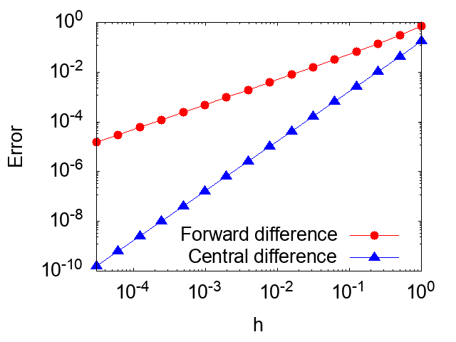

Lesson 1: Numerical derivative and integration
Here, we learn how to numerically evaluate derivatives and integration.
Lesson 1-1: Numerical derivative
First, we learn a numerical method to evaluate the derivative \(f'(x) \). Before starting a practical programing, we revisit the mathematical operation of the derivative. The derivative of a function \( f(x) \) is defined as the following limit, \[ f'(x)= \lim_{h\rightarrow 0} \frac{f(x+h) - f(x)}{h}. \] Therefore, with a small but finite \(h \), one may approximate the derivative \(f'(x) \) as \[f'(x) \approx \frac{f(x+h) - f(x)}{h}. \tag{1} \] This approximation is called finite difference method. One can straightforwardly estimate the error in the finite difference method with the Taylor expansion \[f(x+h) = f(x) + f'(x)h +O(h^2). \tag{2}\] One can rewrite Eq. (\(2\)) as \[f'(x) = \frac{f(x+h)-f(x)}{h}+O(h). \] Hence, the error of the finite difference formula, Eq. (\(1\)), is propotional to \(h\), \(O(h)\). Therefore, one may accurately evaluate the derivative, \(f'(x)\), by using the small value for \(h\).
One may further develop a more accurate finite difference method based on the Taylor expansion. Here, we consider the Taylor expansion of \(f(x+h)\) and \(f(x-h)\) as \[f(x+h) = f(x) + f'(x)h + \frac{1}{2}f''(x)h^2 + O(h^3), \tag{3}\] \[f(x-h) = f(x) - f'(x)h + \frac{1}{2}f''(x)h^2 + O(h^3). \tag{4}\] By taking difference of Eq. (\(3\)) and Eq. (\(4\)), one may obtain \[f'(x) = \frac{f(x+h)-f(x-h)}{2h} +O(h^2). \tag{5}\] Remarkabely, the error of the finite defference formula, Eq. (\(5\)), is propotional to \(h^2\). Hence, the finite difference formula in Eq. (\(5\)) can be more accurate than Eq. (\(1\)) since the error of Eq. (\(5\)) is rapidly converged to zero. The finite difference formula in Eq. (\(1\)) is called forward finite difference while the fomula in Eq. (\(5\)) is callsed central finite difference.
In this section, we learn the numerical derivative with the forward finite difference and central finite difference. As a practive example, we consider the derivative of the exponetional function \(f(x)=e^x\).
[Back to Home]